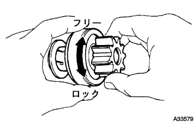
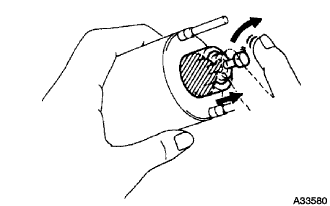

スタータASSY オーバーホール（脱着·分解） |
| 1. スタータ マグネット スイッチASSY取りはずし |
ナットをはずし、Ｃ端子からハーネスを切り離す。
ナット２個をはずし、マグネットスイッチ前部を持ち上げながらムービングスタッドをピニオンドライブレバーからはずし、マグネットスイッチを取りはずす。
| 2. スタータ ヨークASSY取りはずし（スタータ０．８ＫＷ） |
 |
スルーボルト２本をはずし、ヨークおよびピニオンドライブレバーを取りはずす。
| 3. スタータ ヨークASSY取りはずし（スタータ１．０ＫＷ） |
 |
スルーボルト２本をはずし、ヨークを取りはずす。
Ｏリングを取りはずす。
| 4. スタータコンミュテータエンドフレームASSY取りはずし（スタータ０．８ＫＷ） |
コンミュテータエンドフレームを取りはずす。
| 5. スタータコンミュテータエンドフレームASSY取りはずし（スタータ１．０ＫＷ） |
スクリュ２本をはずし、コンミュテータエンドフレームを取りはずす。
Ｏリングを取りはずす。
| 6. スタータブラシスプリング取りはずし（スタータ０．８ＫＷ） |
アーマチャのシャフト部をバイスに固定する。
プレートを取りはずす。
 |
ブラシスプリング４個を取りはずす。
ブラシホルダインシュレータを取りはずす。
| 7. スタータ ブラシ ホルダASSY取りはずし（スタータ１．０ＫＷ） |
マイナスドライバーを使用して、ブラシスプリングを起こしブラシホルダを切り離す。
ブラシ４個を切り離し、ブラシホルダを取りはずす。
ブラシスプリングを取りはずす。
| 8. スタータ アーマチャASSY取りはずし |
| 9. スタータ クラッチ取りはずし（スタータ０．８ＫＷ） |
アーマチャをバイスに固定する。
ピニオンストップナット（アウタ）を取りはずす。
 |
マイナスドライバーを使用して、ピニオンストップナット（インナ）をクラッチ側へ移動する。
 |
マイナスドライバーを使用して、スナップリングを取りはずす。
ピニオンストップナットおよびクラッチを取りはずす。
| 10. スタータ クラッチ取りはずし（スタータ１．０ＫＷ） |
 |
スタータハウジングからドライブレバー、スタータクラッチおよびショックアブソーバベアリングを取りはずす。
 |
マイナスドライバーを使用して、ピニオンストップカラーをクラッチ側へ移動させる。
マイナスドライバーを使用して、スナップリングをはずす。
ピニオンストップナットおよびクラッチを取りはずす。
| 11. スタータ アーマチャASSY点検 |
 |
ＳＳＴ（トヨタエレクトリカルテスター）を使用して、コンミュテータとアーマチャコイルコア間の抵抗を測定する。
ＳＳＴ（トヨタエレクトリカルテスター）を使用して、各セグメント間の導通の有無を確認する。
Ｖブロックでアーマチャの両端を支え、ダイヤルゲージおよびダイヤルゲーシ平座形測定子を使用して、アーマチャの振れを測定する。
 |
ノギスを使用して、コンミュテータの外径を測定する。
 |
ノギスを使用して、セグメント間のアンダーカットの深さを測定する。
| 12. フイールドコイル点検 |
 |
ＳＳＴ（トヨタエレクトリカルテスター）を使用して、フィールドコイルブラシリードとＣ端子ハーネス間の導通の有無を確認する。
 |
ＳＳＴ（トヨタエレクトリカルテスター）を使用して、フィールドコイルブラシリードとスタータヨーク間の抵抗を測定する。
| 13. ブラシ点検 |
 |
ノギスを使用して、ブラシ中央部の長さを測定する。
| 14. ブラシ取替（スタータ０．８ＫＷ） |
 |
ブラシリード線をターミナル側で切断する。
ブラシリード線をやすりで削る。
 |
ターミナルのリード線溶接側に補給用のブラシのプレート部を重ねて圧着する。
 |
圧着部にハンダ付けを行う。
| 15. ブラシ取替（スタータ１．０ＫＷ） |
ブラシリード線をターミナル側で切断する。
 |
ブラシリード線の溶接跡をやすりで削り、ターミナルを基準寸法に修正する。
ターミナルのリード線溶接側に補給用のブラシのプレート部を重ねて圧着する。
| 16. スタータ ブラシ ホルダASSY点検（スタータ１．０ＫＷ） |
 |
ＳＳＴ（トヨタエレクトリカルテスター）を使用して、プラス側ブラシホルダとマイナス側ブラシホルダ間の抵抗を測定する。
| 17. スタータ クラッチ点検 |
|  |
ピニオンギヤを左に回転させたときロックし、右に回転させたとき滑らかに回転すること確認する。
| 18. スタータ マグネット スイッチASSY点検 |
|  |
プランジャを押し込んで放したとき、すばやくもとの位置に戻ることを確認する。
ＳＳＴ（トヨタエレクトリカルテスター）を使用して、50端子とＣ端子間の導通の有無を確認する。
ＳＳＴ（トヨタエレクトリカルテスター）を使用して、50端子とマグネットスイッチボデー間の導通の有無を確認する。
| 19. スタータ クラッチ取り付け（スタータ０．８ＫＷ） |
クラッチのブシュ、スプライン部およびピニオンストップナットにデンソー５０号グリースを塗布する。
 |
アーマチャにクラッチおよびピニオンストップナットを取り付ける。
 |
新品のスナップリングにデンソー５０号グリースを塗布し、アーマチャの溝に取り付ける。
バイスでスナップリングを圧縮する。
 |
クラッチの外周を手で保持し、プラスチックハンマーを使用して、アーマチャを軽くたたき、ピニオンストップナットをスナップリングの上へ移動させる。
ピニオンストップナット（アウタ）を取り付ける。
| 20. スタータ クラッチ取り付け（スタータ１．０ＫＷ） |
クラッチのブシュ、スプライン部およびピニオンストップナットにデンソー５０号グリースを塗布する。
プラネットキャリアシャフトにクラッチおよびピニオンストップナットを取り付ける。
スナップリングにデンソー５０号グリースを塗布し、プラネットキャリアシャフトの溝に取り付ける。
バイスでスナップリングを圧縮する。
クラッチの外周を手で保持し、プラスチックハンマーを使用して、プラネットキャリアシャフトを軽くたたき、ピニオンストップナットをスナップリングの上へ移動させる。
 |
ピニオンドライブレバーのハウジング、クラッチ、ムービングスタッドの各当たり面にデンソー５０号グリースを塗布する。
クラッチにピニオンドライブレバーを取り付ける。
 |
ドライブハウジングの切り欠きとショックアブソーバベアリングの凸部を合わせて、ショックアブソーバベアリングを取り付ける。
| 21. スタータ アーマチャASSY取り付け |
| 22. スタータブラシスプリング取り付け（スタータ０．８ＫＷ） |
アーマチャのシャフト部をバイスに固定する。
ブラシホルダインシュレータを取り付ける。
|
ブラシスプリング４個を取り付ける。
プレートを取り付ける。
| 23. スタータ ブラシ ホルダASSY取り付け（スタータ１．０ＫＷ） |
ブラシスプリングを取り付ける。
ブラシホルダを取り付ける。
マイナスドライバーを使用して、ブラシスプリングを起こしブラシを取り付ける
| 24. スタータコンミュテータエンドフレームASSY取り付け（スタータ０．８ＫＷ） |
カバーを取り付ける。
コンミュータエンドフレームを取り付ける。
| 25. スタータコンミュテータエンドフレームASSY取り付け（スタータ１．０ＫＷ） |
スタータフランジベアリング内周部にエンジンオイルを塗布する。
新品のＯリングを取り付ける。
スクリュ２本でコンミュータエンドフレームを取り付ける。
| 26. スタータ ヨークASSY取り付け（スタータ０．８ＫＷ） |
ピニオンドライブレバーのハウジング、クラッチおよびムービングスタッドの各当たり面にデンソー５０号グリースを塗布する。
ピニオンドライブレバーをヨークにつけ、ボルト２本で取り付ける。
| 27. スタータ ヨークASSY取り付け（スタータ１．０ＫＷ） |
Ｏリングを取り付ける。
 |
ヨークの凹部とショックアブソーバベアリングの凸部を合わせて、ボルト２本でヨークを取り付ける。
| 28. スタータ マグネット スイッチASSY取り付け |
ムービングスタッドをピニオンドライブレバーの上側から引っ掛け、ナット２個でマグネットスイッチを取り付ける。
ナットでハーネスをＣ端子に取り付ける。